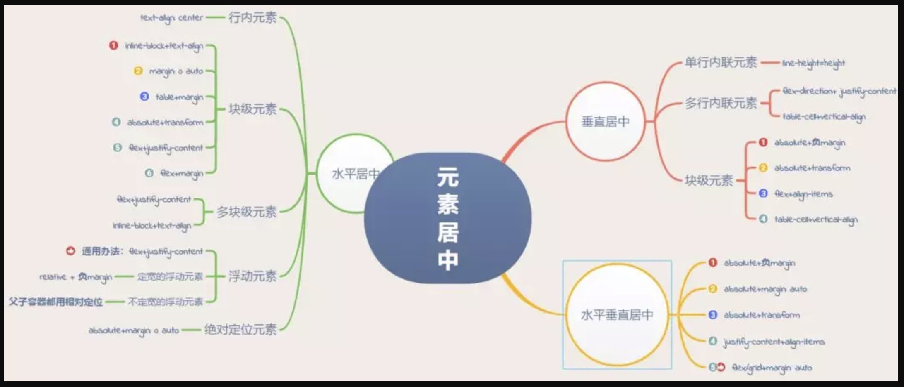
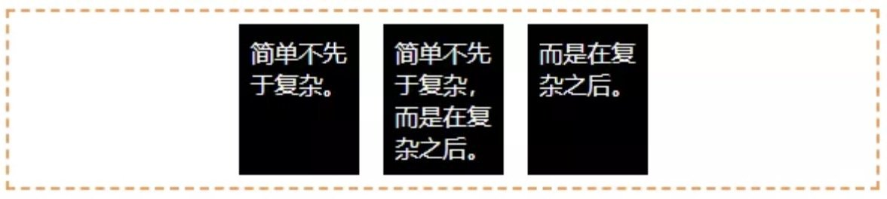
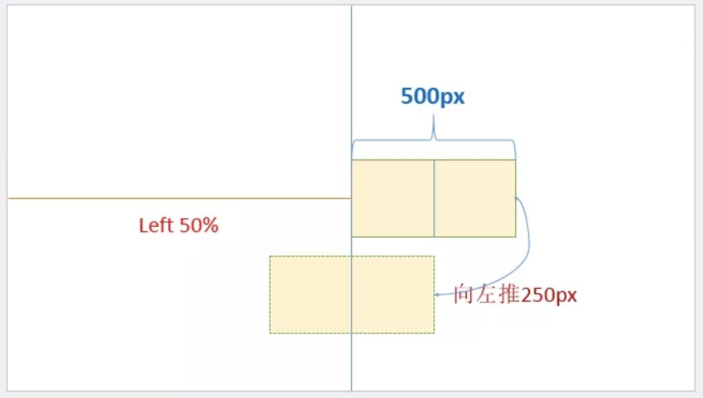
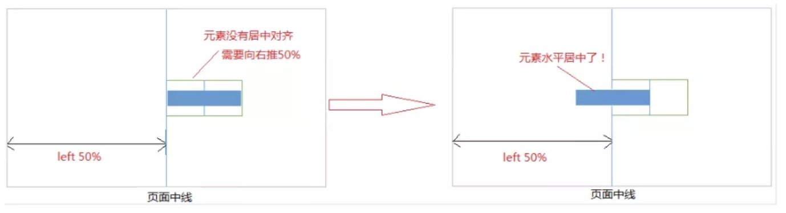
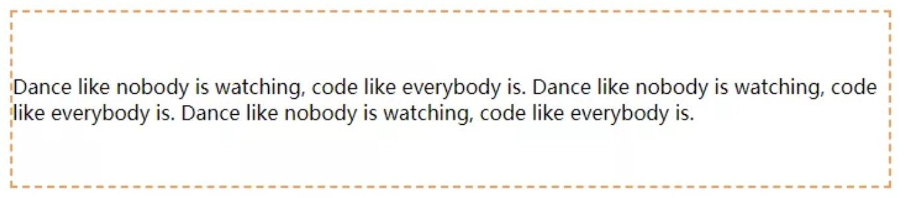
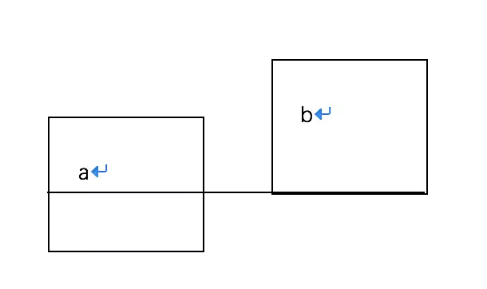
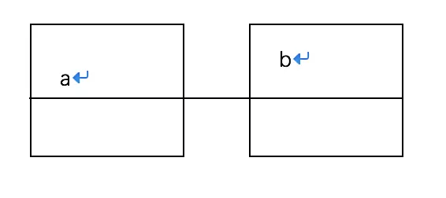
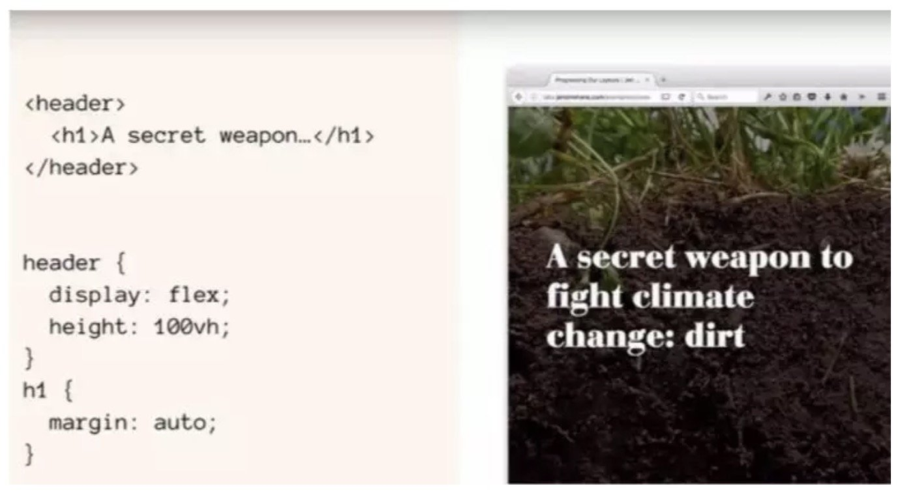

居中(如何居中一个元素)

一、水平居中
1.行内元素水平居中
利用 text-align: center 可以实现在块级元素内部的行内元素水平居中。此方法对inline、inline-block、inline-table和inline-flex元素水平居中都有效。
1 | .parent{//在父容器设置 |
此外，如果块级元素内部包着也是一个块级元素，我们可以先将其由块级元素改变为行内块元素，再通过设置行内块元素居中以达到水平居中。
1 | <div class="parent"> |
2.块级元素的水平居中
这种情形可以有多种实现方式，下面我们详细介绍:
①将该块级元素左右外边距margin-left和margin-right设置为auto
1 | .child{ |
②使用table+margin
先将子元素设置为块级表格来显示（类似），再将其设置水平居中
display:table在表现上类似block元素，但是宽度为内容宽。
1 | <div class="parent"> |
③使用absolute+transform
先将父元素设置为相对定位，再将子元素设置为绝对定位，向右移动子元素，移动距离为父容器的一半，最后通过向左移动子元素的一半宽度以达到水平居中。
1 | <div class="parent"> |
不过transform属于css3内容，兼容性存在一定问题，高版本浏览器需要添加一些前缀。
④使用flex+justify-content
通过CSS3中的布局利器flex中的justify-content属性来达到水平居中。
1 | <div class="parent"> |
⑤使用flex+margin
通过flex将父容器设置为为Flex布局，再设置子元素居中。
1 | <div class="parent"> |
3.多块级元素水平居中

①利用flex布局
利用弹性布局(flex)，实现水平居中，其中justify-content 用于设置弹性盒子元素在主轴（默认横轴）方向上的对齐方式，本例中设置子元素水平居中显示。
1 | #container { |
源代码演示 http://www.42du.cn/run/60
②利用inline-block
将要水平排列的块状元素设为display:inline-block，然后在父级元素上设置text-align:center，达到与上面的行内元素的水平居中一样的效果。
1 | .container { |
源代码演示 http://www.42du.cn/run/59
4.浮动元素水平居中
- 对于定宽的浮动元素，通过子元素设置relative + 负margin
- 对于不定宽的浮动元素，父子容器都用相对定位
- 通用方法(不管是定宽还是不定宽)：flex布局
①定宽的浮动元素
通过子元素设置relative + 负margin,原理见下图：

注意：样式设置在浮动元素本身
1 | .child { |
②不定宽的浮动元素
通过父子容器都相对定位，偏移位移见下图：

注意：要清除浮动，给外部元素加上float。这里的父元素就是外部元素
1 | <div class="box"> |
③通用办法flex布局(不管是定宽还是不定宽)
利用弹性布局(flex)的justify-content属性，实现水平居中。
1 | .parent { |
5.绝对定位元素水平居中
这种方式非常独特，通过子元素绝对定位，外加margin: 0 auto来实现。
1 | <div class="parent"> |
二、垂直居中
1.单行内联元素垂直居中
1 | <div id="box"> |
2.多行内联元素垂直居中
①利用flex布局（flex）
利用flex布局实现垂直居中，其中flex-direction: column定义主轴方向为纵向。这种方式在较老的浏览器存在兼容性问题。
1 | <div class="parent"> |

②利用表布局（table）
利用表布局的vertical-align: middle可以实现子元素的垂直居中
1 | <div class="parent"> |
③只使用 vertical-align: middle
该属性定义行内元素的基线相对于该元素所在行的基线的垂直对齐。假设有两个行内元素a和b，a和b都是div，当a加了一个vertical-align:middle样式之后，b的底部（基线）就会对齐a的中间位置，如下图：

如果a和b都加了一个vertical-align:middle样式，那么就互相对齐了对方的中间位置，也就是它们在垂直方向上的中线对齐了，如下图：

现在我要让class="box"的div在class="wrapper"的div里面垂直居中，我可以在class="wrapper"的div里面加一个div空标签，把它的高度设为100%，宽度设置为0，再给它一个vertical-align:middle样式，同样的给class="box"的div一个vertical-align:middle样式，那么box就可以在div里面垂直居中了。
1 | <style> |
3 块级元素垂直居中
①使用absolute+负margin(已知高度宽度)
通过绝对定位元素距离顶部50%，并设置margin-top向上偏移元素高度的一半，就可以实现了。
1 | <div class="parent"> |
②使用absolute+transform
当垂直居中的元素的高度和宽度未知时，可以借助CSS3中的transform属性向Y轴反向偏移50%的方法实现垂直居中。但是部分浏览器存在兼容性的问题。
1 | <div class="parent"> |
③使用flex+align-items
通过设置flex布局中的属性align-items，使子元素垂直居中。
1 | <div class="parent"> |
④使用table-cell+vertical-align
通过将父元素转化为一个表格单元格显示（类似 和 ），再通过设置 vertical-align属性，使表格单元格内容垂直居中。
1 | <div class="parent"> |
三、水平垂直居中
这种情形也是有多种实现方式，接下去我们娓娓道来：
方法1：绝对定位与负边距实现（已知高度宽度）
这种方式需要知道被垂直居中元素的高和宽，才能计算出margin值，兼容所有浏览器。
1 | // css部分 |
1 | // html部分(这部分不做变化,下面例子直接共用) |
方法2：绝对定位与margin:auto（已知高度宽度）
这种方式无需知道被垂直居中元素的高和宽，但不能兼容低版本的IE浏览器。
假设 #container 盒子的宽高分别为400、600，#center 盒子的宽高分别为100、100
绝对定位盒子的特性
高宽有内容撑开
水平方向上： left + right + width + padding + margin = 包含块内容区域的尺寸
0 0 100 0 auto 400
垂直方向上： top + bottom + height + padding + margin = 包含块内容区域的尺寸
0 0 100 0 auto 600
因为 #center 的水平和垂直 margin 都为 auto，所以此时的 #center 的 margin-left/right 是（400-100）/ 2 = 150px，margin-top/bottom 是250px
注意：绝对定位下的
margin：auto实际值是margin：auto auto，正常模式下的margin: auto;实际值是margin：0 auto。
1 | #container { |
方法3：绝对定位+CSS3(未知元素的高宽)
利用Css3的transform，可以轻松的在未知元素的高宽的情况下实现元素的垂直居中。
CSS3的transform固然好用，但在项目的实际运用中必须考虑兼容问题，大量的hack代码可能会导致得不偿失。
1 | #container { |
方法4：flex布局
利用flex布局，其中justify-content 用于设置或检索弹性盒子元素在主轴（横轴）方向上的对齐方式；而align-items属性定义flex子项在flex容器的当前行的侧轴（纵轴）方向上的对齐方式。不能兼容低版本的IE浏览器。
1 | #container {//直接在父容器设置即可 |
方法5：flex/grid与margin:auto(最简单写法)
容器元素设为 flex 布局或是grid布局，子元素只要写 margin: auto 即可,不能兼容低版本的IE浏览器。
1 | #container { |
